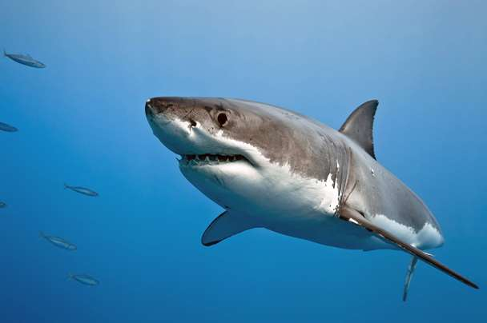

Protected Species: Due to overfishing and habitat loss, great white
sharks are listed as vulnerable by the International Union for
Conservation of Nature (IUCN), leading to various conservation
efforts.
Accordion Item Blacktip Reef sharks
Habitat: These sharks are commonly found in shallow coastal waters,
particularly around coral reefs, where they hunt for food and seek
shelter.

Great White shark
Electroreception: Great whites have specialized organs called
ampullae of Lorenzini, which allow them to detect the electric
fields generated by other animals. This helps them locate prey
even in murky waters.